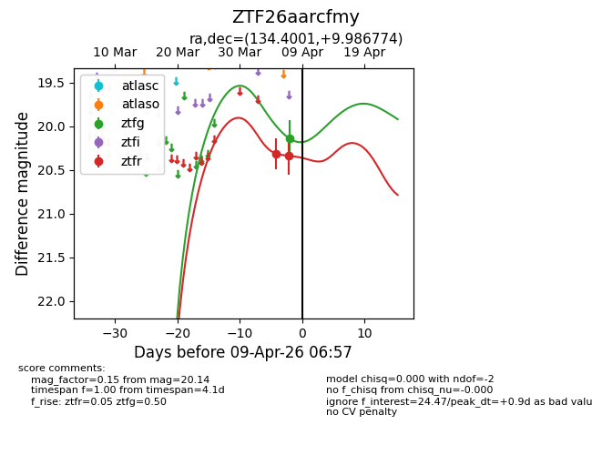
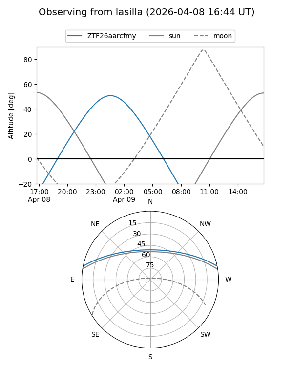
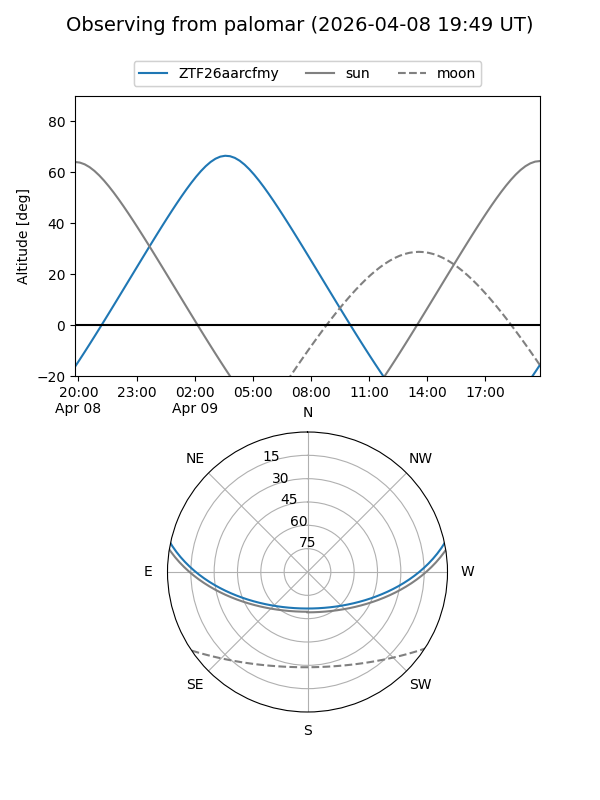
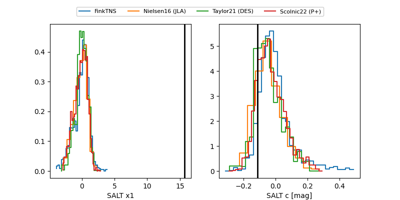

ZTF26aarcfmy
Target ZTF26aarcfmy at 2026-04-09 07:02
Aliases and brokers:
FINK: link
Lasair: link
ALeRCE: link
alt names
ZTF26aarcfmy (ztf,fink_ztf)
Coordinates:
equatorial (ra, dec) = 134.4001,+9.98677
equatorial (HMS+DMS) = 08:57:36.02,+09:59:12.39
galactic (l, b) = (218.4149,+32.51890)
Flags:
Photometry:
last ztfg=20.14, ztfr=20.34
1 ztfg, 2 ztfr detections
Lightcurve

Visibility


Additional plots
